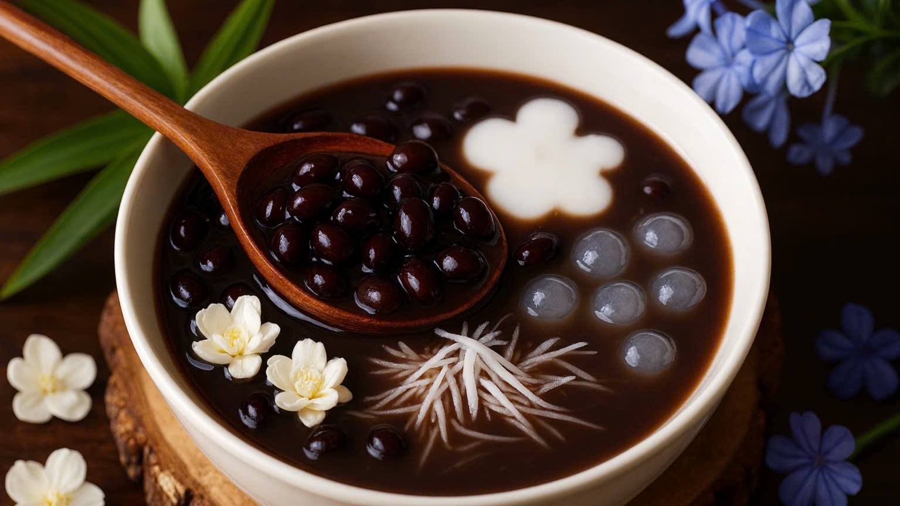

Chè đỗ đen
Nguyên liệu
Đỗ đen
Trân châu
Đường, muối
Bột năng
Nước cốt dừa (tùy thích)
Cách làm
Ngâm đỗ 2-3 giờ.
Ninh mềm, thêm chút muối.
Thêm đường, đun sôi.
Hòa bột năng cho vào tạo độ sánh.
Ăn lạnh hoặc nóng, thêm đá.
Xem chi tiết ->